Introduction
Ce rapport accompagne le relevé d'audit effectué sur le site « a-z.lu ».
La méthodologie d'audit employée repose sur le référentiel RGAA 4.1, consultable à l'adresse suivante : https://accessibilite.public.lu/fr/rgaa4.1/criteres.html
L'audit a été réalisé au moyen de l'utilisation de navigateurs web et d'outils spécialisés. Des tests de restitution ont également été effectués conformément à la base de référence définie par le RGAA 4.1.
Échantillon
L'audit a porté sur un échantillon de 9 pages pour le niveau double A (AA) :
Environnement de test (base de référence)
Quelques critères RGAA, notamment ceux de la thématique JavaScript, incluent des tests de restitution à effectuer sur des technologies d'assistance associées à des navigateurs et des systèmes d'exploitation. Pour qu'un dispositif HTML / WAI-ARIA ou son alternative soit considéré comme compatible avec l'accessibilité, il faut qu'il soit pleinement fonctionnel, en termes de restitution et de fonctionnalités sur certaines combinaisons. Vous trouverez une explication détaillée de cet environnement de tests dans le document du RGAA 4.1.
Nous détaillons ci-dessous la base de référence utilisée pour réaliser les tests de restitution des composants du site.
Environnement de test – ordinateur
| Technologie d'assistance | Navigateur |
|---|---|
| NVDA 2021.2 | Firefox 92.0.1 |
| JAWS 2020 | Internet Explorer 11 |
| VoiceOver | Safari 15 |
Environnement de test — mobile
| Système d'exploitation | Technologie d'assistance | Navigateur |
|---|---|---|
| Android 10 | TalkBack (dernière version) | Chrome 86 |
Accessibilité des pages auditées
Le site présente un niveau général d'accessibilité faible.
Le niveau moyen de conformité relevé atteint 24,07% de conformité sur l'ensemble des pages auditées, avec 19,05% de conformité au niveau simple A (A) et 41,67% de conformité au niveau double A (AA).
Le site est non conforme.
Conformité RGAA 4.1 du site
| Conforme | Non conforme | |
|---|---|---|
| A | 19,05% | 80,95% |
| AA (légal) | 24,07% | 75,93% |
Note sur le calcul de conformité
La conformité globale (Tableau « Conformité RGAA 4.1 ») est calculée de la manière suivante : C / (C+NC). C est le nombre de critères conformes et NC le nombre de critères non conformes.
C'est ce nombre qui constitue la référence légale. Il représente le taux de conformité de l'échantillon.
Il est normal que le taux de conformité global diffère sensiblement du taux de conformité par page. En effet, un critère NC (non conforme) sur une page rend le critère non conforme sur l'ensemble de l'échantillon.
Pour qu'un site soit conforme (100 % des critères applicables sont conformes au niveau AA), il est nécessaire que le taux de conformité par page équivaille à 100 %.
Conformité pour chaque niveau
| Conforme | Non conforme | |
|---|---|---|
| A | 19,05% | 80,95% |
| AA | 41,67% | 53,33% |
Moyenne par pages
| Nº page | Titre de la page | %C |
|---|---|---|
| P01 | Accueil | 45% |
| P02 | Résultats de recherche (« Paris ») | 51,22% |
| P03 | Aide | 68,57% |
| P04 | Identification | 57,58% |
| P05 | Proposition d'acquisition (sans soumission) | 65,63% |
| P06 | Mes favoris | 73,33% |
| P07 | Compte Lecteur : Aperçu (sans données utilisateur) | 83,33% |
| P08 | Compte Lecteur : Informations personnelles | 62,86% |
| P09 | Notice individuelle | 52,50% |
Moyenne par thématiques
| Thématiques | C | NC |
|---|---|---|
| Images | 50% | 50% |
| Cadres | 0% | 100% |
| Couleurs | 0% | 100% |
| Multimédia | 0% | 0% |
| Tableaux | 50% | 50% |
| Liens | 0% | 100% |
| Script | 0% | 100% |
| Eléments obligatoires | 22,22% | 77,78% |
| Structuration | 0% | 100% |
| Présentation | 54,55% | 45,45% |
| Formulaires | 11,11% | 88,89% |
| Navigation | 20% | 80% |
| Consultation | 66,67% | 33,33% |
Impacts utilisateurs
Les principales personnes impactées sont les personnes aveugles et celles qui naviguent au clavier. Les problèmes liés aux scripts, à l'API ARIA et aux formulaires rendent parfois difficile l'utilisation du site par ces utilisateurs.
Note sur le relevé des non-conformités
Ne sont cités dans ce rapport que quelques exemples issus du relevé des non-conformités.
De plus, toutes les occurrences d'une non-conformité ne sont pas listées dans le relevé. Par exemple : concernant la visibilité des prises de focus, le relevé mentionne quelques occurrences, mais ne les cite pas toutes.
Avis
Le site, qui repose en majeure partie sur des fonctionnalités Javascript, fait un usage inapproprié de l'API ARIA qui les rend souvent inutilisables pour les personnes se servant de technologies d'assistance. Le fonctionnement en Single Page Application en l'absence de gestion des reprises de focus rend également très problématique l'utilisation du site par ces utilisateurs, ainsi que par tout utilisateur naviguant au clavier.
Les non-conformités les plus bloquantes pour les utilisateurs concernent :
- L'utilisation abusive et inappropriée d'ARIA ;
- La non-gestion des reprises de focus ;
- La non-visibilité des prises de focus ;
- Des contrastes insuffisants sur les textes et certains composants d'interface ;
- La mauvaise structure des pages.
Ce sont donc ces points qui devront nécessiter une attention toute particulière et qui demanderont le plus d'efforts.
Annexe technique
Images
Recommandation
Donner à chaque image porteuse d'information une alternative textuelle pertinente et une description détaillée si nécessaire. Lier les légendes à leurs images. Remplacer les images textes par du texte stylé lorsque c'est possible.
Images porteuses d'information
Il est nécessaire de donner une alternative pertinente dans le cas où la suppression de l'image entraînerait un problème de compréhension des contenus.
Constats sur le site
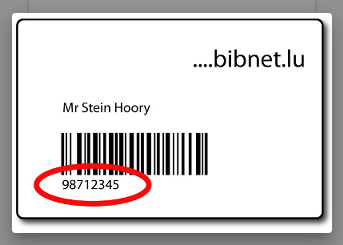Sur la page d'identification, l'utilisateur peut déclencher l'ouverture d'une modale contenant une image lui permettant de localiser l'emplacement de son numéro de lecteur. Cette image porteuse d'information ne possède pas d'alternative.
Cadres
L'absence d'identification des cadres peut poser un problème de repérage dans la structure de la page ou de compréhension des contenus pour les personnes aveugles.
Constats sur le site
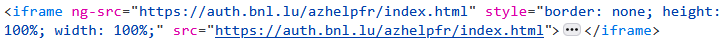Dans les pages d'aides, tout le contenu des pages est intégré dans une iframe. Cette iframe ne possède pas de titre.
Couleurs
Recommandation
Ne pas donner l'information uniquement par la couleur et utiliser des contrastes de couleurs suffisamment élevés pour les textes et les composants d'interface.
Contrastes des textes
Plusieurs couleurs présentent un rapport de contraste insuffisant, ce qui peut poser problème aux grands malvoyants et aux déficients visuels qui ont des difficultés à percevoir les couleurs ou les contrastes.
Rapports de contrastes définis par le RGAA
- Pour les textes qui ont une taille de police calculée inférieure à 24px sans effet de graisse ou une taille de police calculée inférieure à 18,5px avec effet de graisse, le rapport de contraste entre la couleur du texte (y compris le texte en image) et son arrière-plan doit être de 4.5:1, au moins.
- Pour les textes qui ont une taille de police calculée supérieure ou égale à 24px sans effet de graisse ou une taille de police calculée supérieure ou égale à 18,5px avec effet de graisse, le rapport de contraste entre la couleur du texte (y compris le texte en image) et son arrière-plan doit être de 3:1, au moins.
Vous pouvez foncer les couleurs pour obtenir le rapport de contraste exigé.
Si la charte graphique ne peut être modifiée, fournissez une méthode aux utilisateurs pour consulter le site avec des contrastes suffisants. Ceci peut être réalisé simplement avec une fonctionnalité JavaScript et une surcharge CSS des couleurs.
Vous pouvez voir un exemple de ce type de mécanisme sur le site sncf.com. Dans les réglages d'accessibilité, vous trouverez une option qui permet d'afficher le site avec des contrastes renforcés et inversés.
Constats sur le site
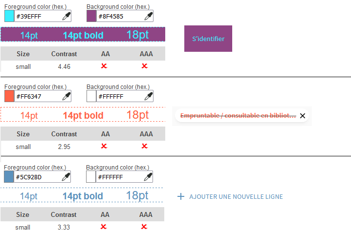Les pages contiennent de nombreuses combinaisons de couleurs de police et d'arrière-plan qui ne sont pas suffisamment contrastées. Par exemple, le lien « S'identifier » dans l'entête, les filtres exclus dans les pages de recherche, ou encore le bouton « Ajouter une nouvelle ligne » dans le module de recherche avancée.
Contraste des composants d'interface
Les composants d'interface, les illustrations porteuses d'information ou encore les mises en couleurs porteuses d'information doivent être suffisamment contrastés pour être perçus par les utilisateurs ayant des troubles de perception des couleurs. Par exemple, une icône porteuse d'information devra avoir un rapport de contraste avec la couleur de fond de 3. De même, pour un champ de saisie de formulaire, dont la zone active est matérialisée par sa bordure, alors la couleur de cette bordure devra avoir un rapport de contraste de 3 avec la couleur de fond de la page.
Constats sur le site
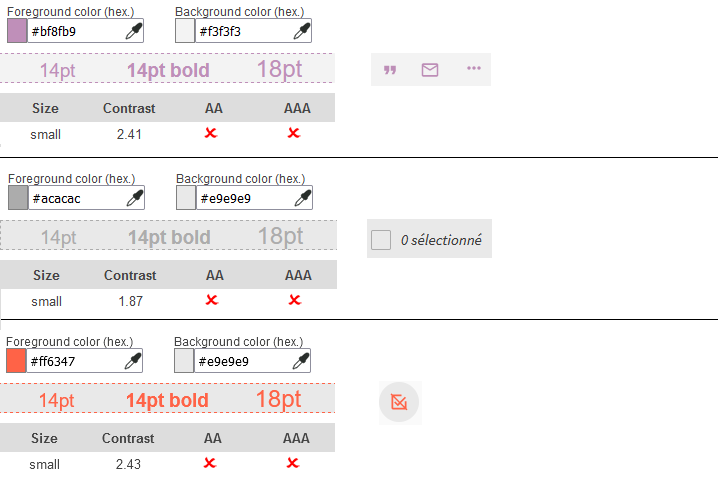Les pages contiennent plusieurs éléments d'interface dont la couleur d'icône ou de bordure n'est pas suffisamment contrastée avec l'arrière-plan. Par exemple les icônes en opacité réduite, les cases à cocher ou encore les icônes d'exclusion de filtres sur les pages de recherche.
Information par la couleur
Lorsqu'une information est donnée par la couleur, il faut qu'elle soit également véhiculée par une autre méthode, par exemple par un texte qui donne la même information, pour être perçue par les utilisateurs aveugles.
Il faut également donner un indice visuel autre que la couleur, afin de répondre aux besoins des personnes déficientes visuelles (les daltoniens par exemple). Il peut s'agir d'un symbole, d'une texture, de chiffres.
Constats sur le site

Sur les pages d'aide, les liens actifs dans le menu « a-z.lu » et dans la Table des matières sont signalés uniquement par la couleur.
Tableaux
Recommandation :
Donner un résumé à chaque tableau de données complexe, s'assurer que pour chaque tableau de données ayant un titre, ce titre est pertinent, identifier clairement les cellules d'en-tête, utiliser un mécanisme pertinent pour lier les cellules de données aux cellules d'en-tête. Pour chaque tableau de mise en forme, veiller à sa bonne linéarisation.
Tableaux de mise en forme
La restitution des tableaux peut poser problème pour les personnes aveugles, car les technologies d'assistance tentent d'optimiser la navigation dans les tableaux, en modifiant par exemple le comportement des flèches de direction pour circuler plus facilement entre les cellules.
Dans un tableau de données, cela est utile et correspond au format de données tabulaires, mais dans un tableau de mise en forme, ce comportement est problématique et peut venir perturber le parcours des informations.
L'API ARIA propose une propriété (role="presentation") qui permet d'annuler la sémantique des éléments restitués.
Constats sur le site
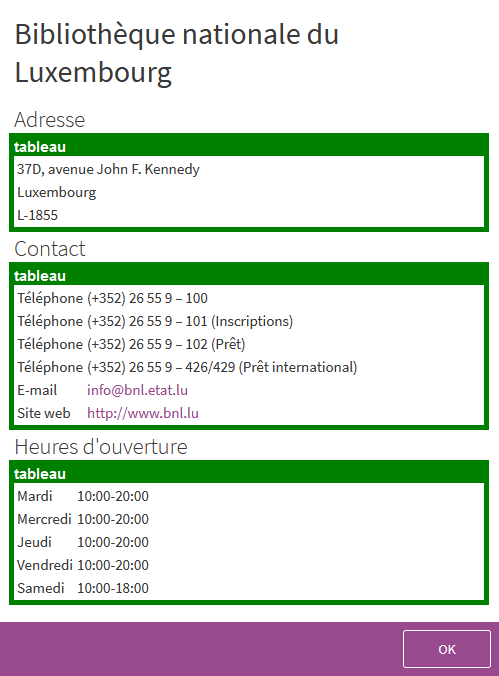Sur la page de Compte utilisateur (Informations personnelles), les coordonnées et horaires des bibliothèques sont mis en forme au moyen de tableaux de présentation dont la sémantique n'est pas annulée.
Liens
Recommandation :
Donner des intitulés de lien explicites, grâce à des informations de contexte notamment, utiliser le titre de lien le moins possible. S'assurer que le nom visible est contenu dans le nom accessible.
Pertinence des intitulés
Un lien possède généralement un intitulé et un contexte. L'intitulé est le texte présent dans la balise <a> (ou la valeur de l'attribut alt de l'image dans le cas d'un lien-image) et le contexte du lien est représenté par le titre qui précède, le titre du lien (l'infobulle) ou tout simplement le texte dans lequel il est inséré.
Pour être considéré comme pertinent, l'intitulé d'un lien doit permettre de comprendre sa destination en prenant en compte son contexte.
Constats sur le site
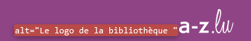Dans l'entête, l'intitulé du lien (« Le logo de la bibliothèque ») n'est pas pertinent. De plus, il ne reprend pas l'intitulé visible (« a-z.lu »).
Titres de liens (infobulles)
La restitution des titres de liens (attribut title sur une balise) dépend fortement des lecteurs d'écran et des préférences utilisateurs. Ainsi, l'utilisation de ces infobulles doit être limitée aux cas où l'infobulle apporte de l'information supplémentaire par rapport à l'intitulé du lien. De plus, cette infobulle doit reprendre au moins l'intitulé du lien pour être considérée comme conforme.
Constats sur le site
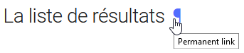Dans les pages d'aide, les permaliens ont des intitulés qui, en prenant en compte leurs contextes, ne permettent pas de comprendre leurs destinations.
Scripts
Recommandation :
Donner si nécessaire à chaque script une alternative pertinente. Rendre possible le contrôle de chaque code script au moins par le clavier et la souris et s'assurer de leur compatibilité avec les technologies d'assistance. Identifier les messages de statut lorsque c'est nécessaire.
Utilisation des boutons et des liens
Pour les aveugles et les grands malvoyants qui utilisent un lecteur d'écran, ce manque de distinction claire entre les liens et les boutons peut poser de graves problèmes.
Ainsi, un bouton implémenté sous la forme d'un lien qui déclenche une action de la page, risque de perturber l'utilisateur qui s'attendra au chargement d'une nouvelle page.
De manière générale, les liens devraient être réservés à l'affichage d'une nouvelle page ou la création de liens d'accès rapide dans le contenu. Dans tous les autres cas, l'emploi d'un bouton d'action est plus pertinent.
Enfin, chaque bouton doit avoir un nom accessible défini, soit par l'intermédiaire d'un texte (visible ou positionné hors écran) ou d'une propriété title, aria-label ou aria-labelledby.
Constats sur le site
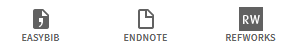Dans les pages de recherche, certaines options « Envoyer à » déclenchent le chargement de nouvelles pages mais sont implémentées avec des boutons. Par exemple : « Easybib », « Endnote » et « Refworks ».
Utilisation inappropriée de propriétés ARIA
Les propriétés ARIA sont chargées de transmettre des informations indispensables à la restitution et l'utilisation des composants développés avec JavaScript aux technologies d'assistance. Une utilisation inappropriée peut poser des problèmes de restitution notamment.
Constats sur le site

Les options « Envoyer à » implémentent des fonctionnalités qui utilisent et mélangent de nombreuses propriétés ARIA relatives à des modèles de conception, de manière inappropriée et incompatible entre elles ou avec les éléments HTML.
Éléments interactifs inaccessibles au clavier
Si un élément ne peut pas recevoir le focus ou n'est pas totalement utilisable au clavier, les utilisateurs pour lesquels le clavier est le seul moyen de naviguer seront bloqués.
Constats sur le site
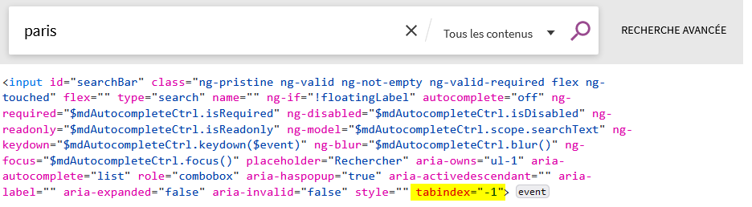Dans les pages de recherche, un bug de développement (attribut tabindex="-1") rend impossible la prise de focus du champ de recherche à la tabulation lorsqu'on passe de la recherche avancée à la recherche simple.
Gestion de la visibilité de zones
Le site possède des fonctionnalités d'affichage ou de masquage des zones de contenus. L'état affiché/masqué du contenu additionnel doit pouvoir être disponible pour les technologies d'assistance afin que les utilisateurs aveugles accèdent à cet état.
Pour ce type d’élément, l’implémentation du motif ARIA Disclosure est recommandée.
Constats sur le site
Dans la liste des résultats de recherche, les fonctionnalités d'options, de citation et d'e-mail n'implémentent pas le motif de conception ARIA Disclosure.
Autocomplétion
Les champs de saisie qui proposent des listes de résultats au fil de la saisie ne sont pas toujours accessibles aux utilisateurs qui ne perçoivent pas l’écran ou ne le perçoivent pas dans sa totalité. En effet, ils n’ont pas l’information que des résultats sont apparus par exemple, ou encore que la recherche ne retourne aucun résultat.
Constats sur le site
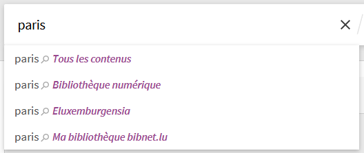Le champ de recherche ne respecte pas totalement le motif de conception ARIA Combobox :
- Le nombre de suggestions annoncé ne correspond pas au nombre d'éléments dans la liste ;
- Le contenu des options n'est pas correctement restitué.
Message de statut
Les messages de statut concernent les messages d'alerte, de confirmation ou d'historisation. Dans tous ces cas, certains utilisateurs, par exemple les personnes aveugles ou les utilisateurs de loupes d’écrans vocalisées, risquent de ne pas prendre connaissance de ces messages si leur restitution n'est pas contrôlée.
L'API ARIA propose plusieurs rôles spécifiques qui permettent de contrôler la restitution de ce type de message :
- Le
role="alert"pour les messages d'alerte ; - Le
role="status"pour les messages de confirmation ; - Le
role="log"pour les messages d'historisation.
L'utilisation appropriée de ces rôles va permettre de déclencher leur vocalisation dès qu'ils deviendront actifs (rendus visibles ou insérés dans le DOM).
Constats sur le site
Les pages font un usage inapproprié de messages de statuts cachés, notamment concernant les fonctionnalités d'ajout aux favoris.
Éléments obligatoires
Recommandation
Vérifier que chaque page web a un code valide selon le type de document, un titre pertinent et une indication de langue par défaut. Vérifier que les balises ne sont pas utilisées uniquement à des fins de présentation, que les changements de langues et de direction de sens de lecture sont indiqués.
Titre de la page
Le titre de la page (visible dans l'onglet du navigateur) est un élément de repère dans le site web. Pour les utilisateurs de lecteurs d'écran (utilisateurs aveugles ou grands malvoyants), c'est le premier élément restitué par le lecteur d'écran au chargement de la page. Cela permet de donner du contexte aux utilisateurs qui n'ont pas une vision globale de la page. Pour les utilisateurs avec des troubles de la mémoire, c'est l'information à laquelle ils accèdent lorsqu'ils naviguent avec l'historique de navigation du navigateur. Il est donc essentiel d'avoir des titres de pages pertinents, concis et très souvent uniques dans le site, et qui reflètent de la position de l'utilisateur dans le site web.
Il est des cas particuliers, comme les pages dont le contenu est une liste de résultats paginés (ex. : les résultats de recherche), pour lesquels le titre doit refléter la nature de la recherche ainsi que le numéro de page en cours de consultation.
Constats sur le site
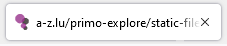Les pages d'aide n'ont pas de titre.
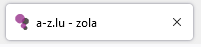Les pages de recherche ont un titre qui ne reprend que les mots-clés et non les autres critères appliqués.
Les autres pages du site ont toutes un titre identique à celui de la page d'Accueil.
Indication de langue
Les lecteurs d'écran utilisent les indications de langue pour vocaliser le contenu dans la langue définie. La page doit contenir une définition de langue principale (généralement sur l'élément html).
Ensuite, les éléments de langue étrangère présents dans le contenu doivent être signalés. Si on trouve dans la page des termes absents du dictionnaire de la langue principale de la page, il faut les identifier afin que le lecteur d'écran les restitue dans la langue appropriée. En effet, une mauvaise prononciation pourrait mener à des incompréhensions pour les utilisateurs qui reposent uniquement sur des restitutions orales. Les noms propres sont exclus de cette obligation.
Constats sur le site
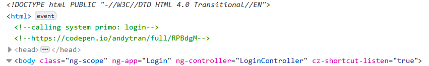La page d'Identification n'a pas de langue par défaut définie.
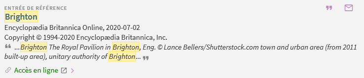Certaines notices contiennent des textes dans des langues étrangères, pour lesquels aucun changement de langue n'est signalé. De même, certaines notices contiennent des textes dans des langues dont le sens de lecture est de droite à gauche, et pour lesquels aucun changement de direction de lecture n'est signalé.
Validité du code
Les technologies d'assistance, comme les lecteurs d'écran ou les systèmes de contrôle à la voix, s'appuient sur le code des pages pour générer les restitutions et les interactions avec l'utilisateur. Un lecteur d'écran va exploiter le code HTML fourni par le navigateur et les informations accessibles au moyen des API d'accessibilité du système.
Si le code comporte des erreurs (balises mal fermées par exemple), il y a un risque que les fonctionnalités du lecteur d'écran soient impactées, comme la navigation de lien en lien par exemple.
Pour vérifier la conformité d'une page, vous pouvez utiliser le validateur mis à disposition par le W3C.
Constats sur le site
Les pages contiennent de nombreuses erreurs de validité de code, notamment des imbrications de balises interdites ou des attributs interdits sur certains éléments HTML.
Balises utilisées à des fins de présentation
Les éléments de structure HTML ont chacun une sémantique particulière (paragraphe, titre, image, lien, etc.). Si les éléments sont mal employés (détournés de leur utilité première), cela peut poser des problèmes aux utilisateurs qui naviguent à l'aide d'une technologie d'assistance (lecteur d'écran, plug-in…). En effet, les technologies d'assistance disposent de raccourcis permettant de naviguer rapidement entre certains types d'éléments (paragraphes, titres, listes, etc.). Si ces éléments sont mal employés, les utilisateurs ne peuvent pas utiliser ces fonctionnalités de repère et de navigation dans le contenu.
Constats sur le site
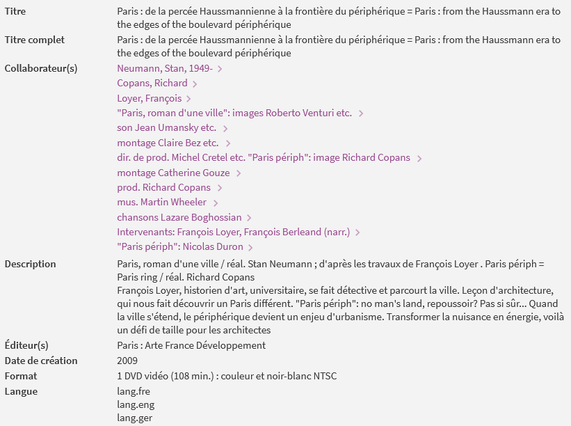Les pages ne font peu ou pas usage de paragraphes. Notamment sur les notices, les textes sont uniquement structurés avec des div ou des span.
Structuration de l'information
Recommandation
Utiliser des titres, des listes, des abréviations et des citations pour structurer l'information. S'assurer que la structure du document est cohérente.
Titres
Le titrage des contenus est une étape importante dans la structuration des contenus. Cela répond à deux besoins :
- identifier rapidement un contenu recherché ;
- naviguer rapidement dans le contenu en se déplaçant de titre en titre.
Un titrage correct fournit à l'utilisateur d'un lecteur d'écran un plan du document et lui permet de naviguer de titre en titre pour se déplacer plus rapidement dans le contenu de la page.
Pour valider la structure de votre page, vous pouvez utiliser l'extension Firefox HeadingsMap. Lorsque l'extension est active, sélectionnez l'onglet « Headings » et vérifiez la cohérence et l'imbrication des titres.
Constats sur le site
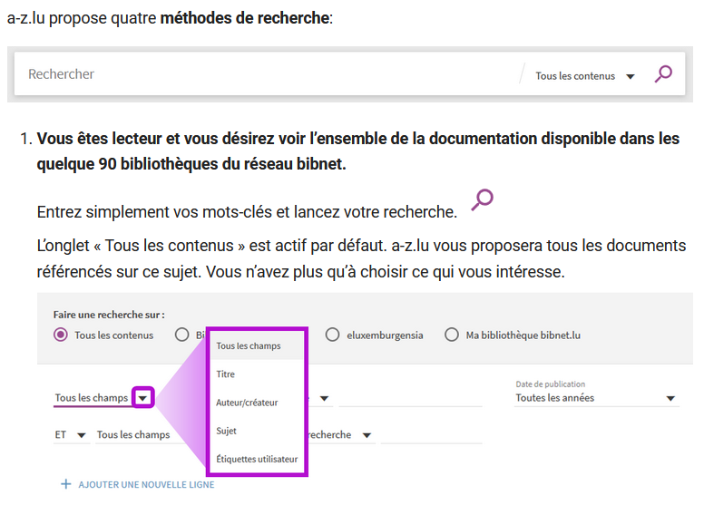Dans la page d'aide, les textes en gras précédés d'un chiffre dans la section « Bienvenu(e) dans l’aide en ligne d’a-z.lu » devraient être des titres.
Listes
La structuration en listes permet aux utilisateurs de lecteurs d'écran de consulter plus rapidement le contenu, grâce à des raccourcis spécifiques, et d'accéder directement à une liste ou de la passer sans avoir à en parcourir tous les items.
Constats sur le site
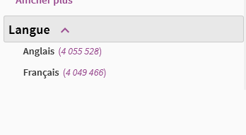Dans les pages de recherche, les suites de filtres ne sont pas structurées avec des éléments de liste.
Citations
L'absence de signalement des citations peut rendre le contenu plus complexe à comprendre pour les personnes aveugles et les grands malvoyants, et générer des ambiguïtés et des incompréhensions.
Constats sur le site
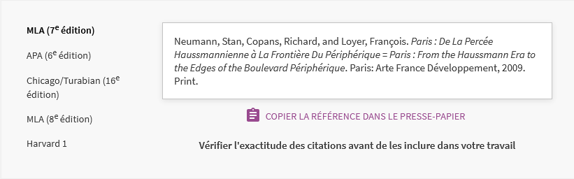Dans les options de citation des notices, les références n'utilisent pas d'éléments de citation.
Structure du document
L'utilisation correcte des balises HTML5 et des landmarks ARIA va permettre d'enrichir la restitution pour les utilisateurs aveugles qui ne perçoivent pas les mises en forme : la navigation principale ne sera plus perçue simplement comme une liste de liens, elle sera restituée à l'utilisateur comme un élément de navigation, par l'intermédiaire du lecteur d'écran qui annoncera « région » ou « repère ».
De plus, ces marqueurs sémantiques vont également constituer des éléments de navigation rapide dans la page. Grâce à un raccourci clavier, certains utilisateurs vont pouvoir naviguer plus rapidement entre les régions qui auront été ainsi identifiées.
Constats sur le site
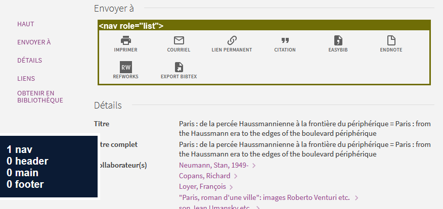Les pages ne disposent d'aucun élément de structure. De plus, un élément de navigation nav est utilisé de façon inappropriée sur la liste des options « Envoyer à ».
Présentation de l'information
Recommandation
Utiliser des feuilles de styles pour contrôler la présentation de l'information. Vérifier l'effet de l'agrandissement des tailles des caractères sur la lisibilité. S'assurer que les liens sont correctement identifiables, que la prise de focus est signalée, que l'interlignage est suffisant et donner la possibilité à l'utilisateur de contrôler la justification des textes. S'assurer que les textes cachés sont correctement restitués et que l'information n'est pas donnée uniquement par la forme ou la position d'un élément. S'assurer que les contenus sont lisibles et utilisables dans une fenêtre de largeur réduite. Veiller à ce que l'application de paramètres typographiques n'entraîne pas la perte de contenu ou de fonctionnalité. S'assurer que les contenus qui apparaissent au survol et à la prise de focus puissent être contrôlés par l'utilisateur.
Utilisation de CSS exclusivement
Certains utilisateurs qui présentent des troubles de la lecture (personnes dyslexiques par exemple), vont avoir besoin d'adapter la présentation des pages avec leurs propres mises en forme. Cela est possible sans difficulté si le site web utilise exclusivement les feuilles de styles CSS pour réaliser les mises en forme. Cependant, l'utilisation d'attributs et balises HTML de mise en forme rend ces adaptations plus compliquées, sinon impossibles.
Le RGAA donne la liste des attributs et balises qu'il est interdit d'utiliser.
Constats sur le site
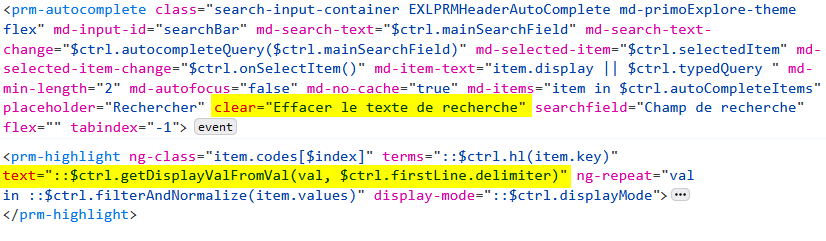La zone de recherche utilise un attribut HTML clear, et les notices utilisent des attributs HTML text
Contenu compréhensible sans les styles : ordre visible vs ordre réel
Un utilisateur aveugle n'a pas accès à la mise en forme qui parfois est porteuse d'informations importantes, notamment des relations entre les éléments.
Il est important de ne pas implémenter les textes dans l'ordre visuel, mais bien dans l'ordre logique de dépendance et hiérarchie des éléments.
Le contenu doit rester compréhensible sans les feuilles de styles (vous pouvez tester vos contenus en désactivant les feuilles de styles).
Constats sur le site
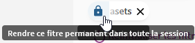Dans les pages de recherche, les boutons « rendre ce filtre permanent » se trouvent après le nom du filtre dans le code HTML.
Visibilité de la prise de focus
Les personnes avec un handicap moteur qui naviguent au clavier peuvent rencontrer des difficultés considérables à utiliser du contenu si elles ne sont pas en mesure de repérer l'indication visuelle du focus et ses déplacements.
Constats sur le site
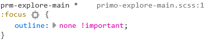La plupart des éléments interactifs des pages annulent l'outline natif (outline: none ou outline: 0).
Largeur réduite
Il s'agit ici de tester la capacité des contenus à se réorganiser lorsqu'un utilisateur malvoyant doit réaliser un zoom graphique de 400%. À ce titre, on teste la lisibilité des contenus dans une fenêtre de largeur réduite à 320px.
On s'assure que l'utilisateur a accès à tous les contenus et que tous les contenus sont lisibles sans avoir recours à la barre de défilement horizontale.
Constats sur le site
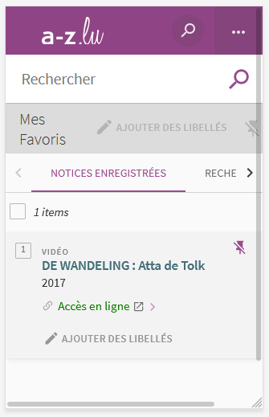Sur la page « Mes Favoris », il est nécessaire d'utiliser le défilement horizontal pour accéder au bouton d'options par lot. De plus, les fonctionnalités de Tri et les boutons d'action individuelle « Citation », « Courriel » et « Options » ne sont pas disponibles.
Contenus additionnels au survol et au focus
Les contenus additionnels qui apparaissent au survol ou à la prise de focus (par exemple, un menu déroulant, une infobulle d'information), peuvent être contrôlés par l'utilisateur. Par exemple, les utilisateurs malvoyants utilisateurs de loupes d'écrans peuvent déclencher l'affichage accidentel des contenus qui apparaissent au survol et ces affichages non désirés perturbent la consultation pour ces utilisateurs. L'utilisateur doit alors disposer d'un moyen simple pour les masquer et continuer sa consultation.
Également, en utilisant une loupe d'écran, il est probable que le contenu additionnel soit en fait apparu en dehors de la zone de zoom de la loupe, l'utilisateur doit pouvoir survoler le contenu additionnel à la souris.
Constats sur le site
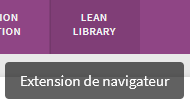Les tooltip ne peuvent pas être survolées ni être masquées sans bouger la souris ou déplacer le focus.
Formulaires
Recommandation :
Associer pour chaque formulaire chacun de ses champs à son étiquette, grouper les champs dans des blocs d'informations de même nature, regrouper les items de même nature dans les listes de choix, donner à chaque bouton un intitulé explicite. Vérifier la présence d'aide à la saisie, s'assurer que le contrôle de saisie est accessible et que l'utilisateur peut contrôler les données à caractère financier, juridique ou personnel.
Étiquettes et champs
Les champs de formulaires doivent tous posséder des étiquettes correctement reliées.
Une étiquette de champ est un texte situé à proximité du champ de formulaire qui permet de connaître la nature, le type ou le format des informations attendues.
De cette manière, lorsqu'un utilisateur entre dans le champ de saisie avec un lecteur d'écran, le lecteur d'écran lit le contenu de l'étiquette. L'utilisateur comprend alors ce qu'il doit saisir.
Sans cela, même si une étiquette est présente visuellement, l'utilisateur entendra « champ de saisie vide » en entrant dans le champ et ne saura donc pas quoi saisir.
Constats sur le site
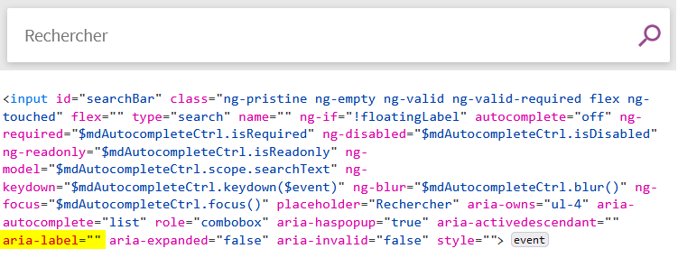Sur les pages de recherche, le champ « Rechercher » ne possède pas d'étiquette : sa propriété aria-label est vide et
le placeholder n'est pas une méthode conforme permettant de définir une étiquette.
Dans les pages de recherche, les intitulés des champs de Date ne permettent pas de comprendre qu'il faut saisir une année et non une date complète.
Intitulés de bouton pertinents
Les boutons qui permettent d'interagir avec les formulaires doivent avoir des intitulés pertinents pour que l'utilisateur comprenne l'action du bouton.
Ces intitulés sont essentiels pour les personnes aveugles, afin qu'elles soient sûres de l'action qu'elles s'apprêtent à réaliser.
Constats sur le site
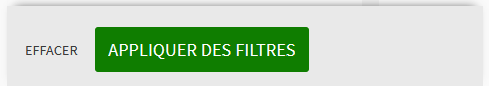Dans la fonctionnalité de Filtres, le bouton « Effacer » n'est pas suffisamment pertinent pour comprendre qu'il permet de supprimer tous les filtres activés.
Contrôle de saisie et aide à la saisie
Tous les champs obligatoires doivent être identifiés préalablement à toute validation de l’utilisateur.
Pour les champs qui attendent un format de saisie particulier pour être validés, ce format doit être spécifié à l’utilisateur par un passage de texte visible à proximité du champ. De plus, si l’utilisateur commet une erreur sur ce champ, alors le message d’erreur doit présenter un exemple réel de saisie.
Enfin, les messages d'erreur de saisie des champs de formulaire doivent être liés correctement aux champs en erreur.
Constats sur le site
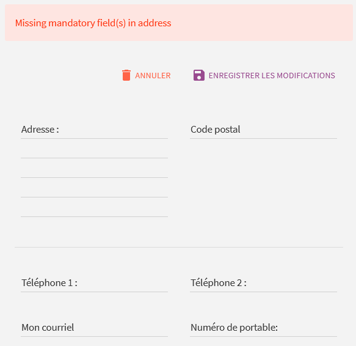Dans la page « Mes informations personnelles », les champs obligatoires ne sont pas indiqués.
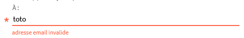Dans le formulaire « Envoyer à : Courriel », le champ e-mail ne propose pas d'exemple de saisie réelle dans son message d'erreur.
Regroupements de champs et légendes
Les regroupements de champs sont utiles pour ne pas induire certains utilisateurs en erreur, notamment les personnes aveugles.
Les cas typiques de regroupements nécessaires sont les groupes de cases à cocher ou de boutons radio.
Il est nécessaire d'implémenter les champs dans un regroupement lorsque c'est nécessaire et il est obligatoire de définir une légende à ce regroupement.
Constats sur le site
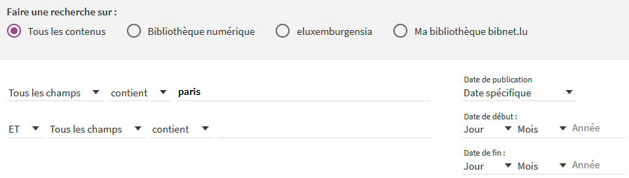Dans la Recherche avancée :
- Les champs des lignes de requête (opérateur - type de champ - opérateur - valeur) ne sont pas regroupés.
- Les champs « Jour », « Mois » et « année » de la « Date de début » et « Date de fin » ne sont pas non plus regroupés.
- Les boutons radio sont regroupés, mais le regroupement ne possède pas de légende.
Identification des données attendues
Certains utilisateurs qui ont des troubles d'accès au langage verbal (paralysie cérébrale, aphasie par exemple) auront des difficultés à accéder au sens des termes écrits. Ainsi, pour leur permettre de remplacer les étiquettes présentes dans les formulaires par des étiquettes (verbales ou imagées) qu'ils connaissent, il est nécessaire d'identifier les champs avec un attribut particulier, de sorte qu'une technologie d'assistance pourra réaliser la personnalisation du formulaire nécessaire à l'utilisateur.
L'identification de ces champs permet également aux utilisateurs d'employer des outils pour remplir automatiquement les champs identifiés avec des valeurs de l'utilisateur.
On ne va rechercher que les champs qui attendent une donnée personnelle. Le RGAA demande d'utiliser l'attribut autocomplete et il fournit l'ensemble des valeurs possibles pour l'attribut.
Constats sur le site
Dans la page « Mes informations personnelles », les champs du formulaire « Informations personnelles » attendent des données personnelles de l'utilisateur mais ne sont pas identifiés par des attributs autocomplete.
Navigation
Recommandation :
Faciliter la navigation dans un ensemble de pages par au moins deux systèmes de navigation différents (menu de navigation, plan du site ou moteur de recherche), un fil d'Ariane et l'indication de la page active dans le menu de navigation. Identifier les groupes de liens importants et la zone de contenu et donner la possibilité de les éviter par des liens de navigation interne. S'assurer que l'ordre de tabulation est cohérent et que la page ne comporte pas de piège au clavier. S'assurer que les raccourcis clavier qui utilisent une seule touche sont contrôlables par l'utilisateur.
Liens d'accès rapide
On note l'absence d'un lien d'accès rapide au contenu au moins. Les liens d'accès rapides sont utiles aux utilisateurs qui naviguent au clavier, mais aussi aux utilisateurs malvoyants qui utilisent une loupe d'écran afin de sauter rapidement les éléments redondants, comme la navigation.
Pour cela, il est préférable que ces liens soient toujours visibles à l'écran. Malgré cela, ces liens peuvent être positionnés hors écran, mais doivent au moins être rendus visibles à la prise de focus.
Il est donc nécessaire d'implémenter au moins un lien d'accès rapide au contenu, qui permet de sauter toute la navigation principale.
Constats sur le site
Les pages disposent de liens d'accès rapide, mais aucun ne permet d'accéder au contenu principal.
Landmarks ARIA
Pour fournir des points de repère aux utilisateurs aveugles, il faudra également implémenter les landmarks ARIA sur les balises HTML 5 de la page.
Constats sur le site
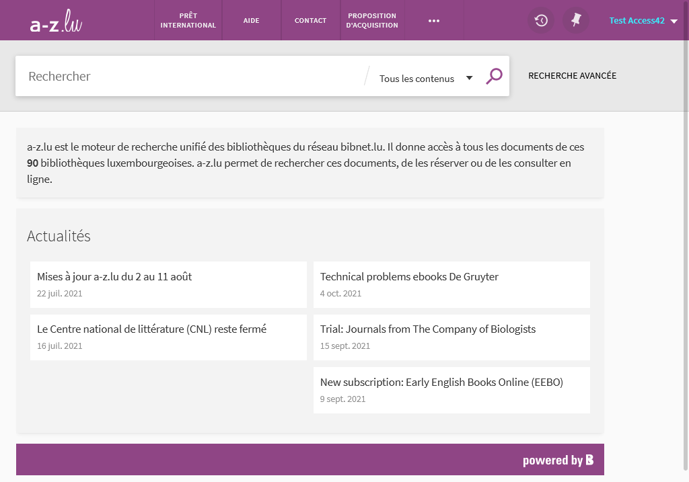Sur la page d'Accueil, les zones de contenu principal et de pied de page ne sont pas identifiées.
Ordre de tabulation
La navigation dans les contenus peut être considérablement compliquée pour les personnes aveugles ou les personnes handicapées motrices qui naviguent au clavier si l'ordre de tabulation n'est pas cohérent.
L'ordre de tabulation est déterminé par l'ordre des éléments dans le code HTML. Il ne suit pas forcément l'ordre de lecture de la page ou de l'écran, mais il doit être cohérent en fonction de la nature des contenus et des fonctionnalités.
Constats sur le site
Dans la page « Mes informations personnelles », on accède aux boutons d'annulation et de validation du formulaire avant d'accéder aux champs.